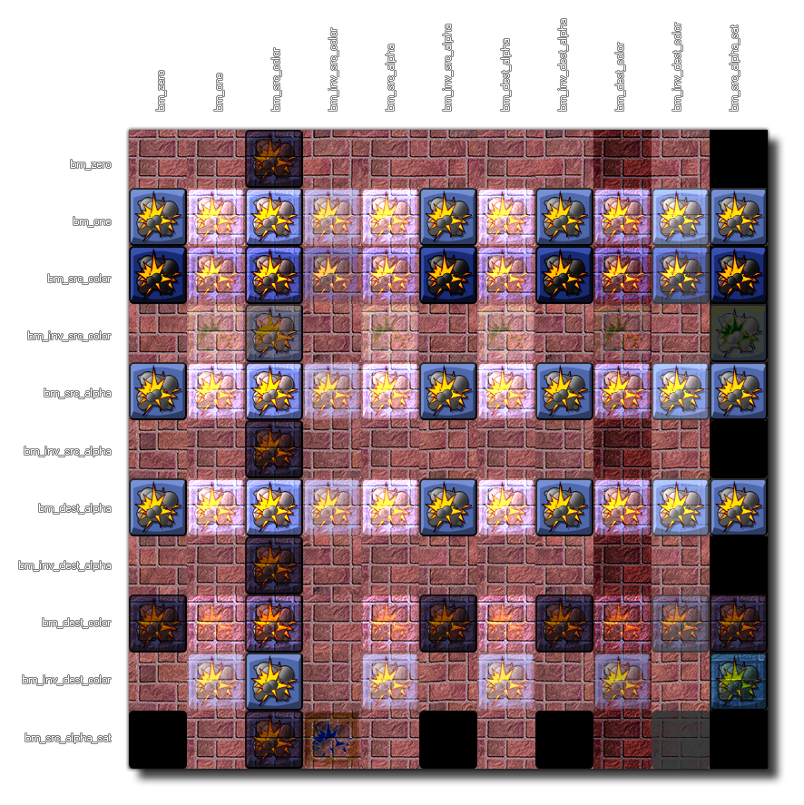

draw_set_blend_mode_ext( src, dest );
| Argument | Description |
|---|---|
| src | Source (see constants above). |
| dest | Destination (see constants above) |
Returns : N/A
When GameMaker:Studio goes to draw a pixel there is a source color (the color of the pixel we're going to draw) and a destination color(the color that's already in the pixel we're drawing to), so when
determining the new color of the pixel, the source and destination colors are calculated according to the choosen blend mode. Each component of the colors is stored as a floating point value between 0 and 1,
and the new color is calculated by multiply each component of the source color by some factor and by multiplying each component of destination color by some other factor and then adding the results together
component by component.
This function permits you to set the different component parts that should be factored together to create a custom blend mode. The source and destination both have a red, green, blue and alpha component, and
in the following chart the source's RGBA are considered (Rs, Gs, Bs, As) while the destination's are (Rd, Gd, Bd, Ad). The eleven constants that are available for use can be either source or destination (or both)
when used in this function.
| Constant | Blend factor (Red, Green, Blue, Alpha) |
|---|---|
| bm_zero | (0, 0, 0, 0) |
| bm_one | (1, 1, 1, 1) |
| bm_src_color | (Rs, Gs, Bs, As) |
| bm_inv_src_color | (1-Rs, 1-Gs, 1-Bs, 1-As) |
| bm_src_alpha | (As, As, As, As) |
| bm_inv_src_alpha | (1-As, 1-As, 1-As, 1-As) |
| bm_dest_alpha | (Ad, Ad, Ad, Ad) |
| bm_inv_dest_alpha | (1-Ad, 1-Ad, 1-Ad, 1-Ad) |
| bm_dest_color | (Rd, Gd, Bd, Ad) |
| bm_inv_dest_color | (1-Rd, 1-Gd, 1-Bd, 1-Ad) |
| bm_src_alpha_sat | (f, f, f, 1) where f = min(As, 1-Ad) |
It can be quite difficult to visualise how these different blend modes work, so below you can find a simple chart that shows the basic interaction of a single sprite being drawn with different
combinations of blend modes over a single background. Please note that the actual results of the blend mode you use will very much depend on the color in the sprite, the alpha value of the
sprite and the color and alpha of the background.

WARNING!: Not all blend modes are available on all platforms. Android, Tizen, iOS, and HTML5 without WebGL enabled will not be able to display the following modes correctly:
- bm_src_color
- bm_inv_src_color
- bm_dest_color
- bm_inv_dest_color
- bm_src_alpha_sat
draw_set_blend_mode_ext(bm_src_alpha, bm_one);
draw_circle_color(100, 100, 50, c_white, c_black, 0);
draw_set_blend_mode(bm_normal);
This will turn the black into transparency, creating a 'glow' effect from the white being strong on the outside and gradually weakening further from the circle centre. The blend mode is reset after the circle is drawn to ensure additive blending is not also applied to everything else after it.